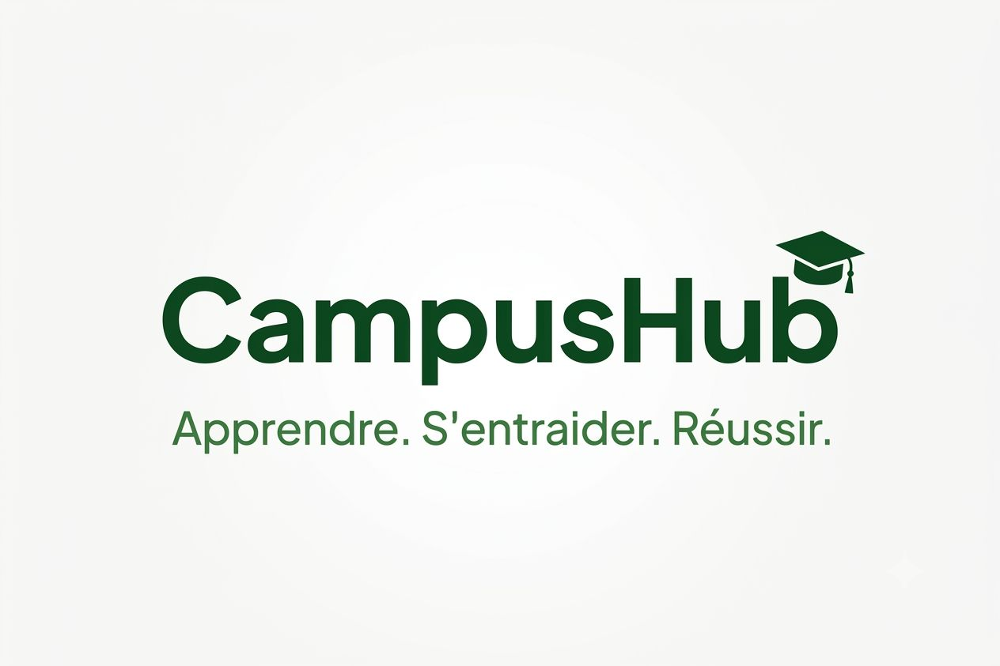

Des projets concrets réalisés pendant mon apprentissage — chacun avec un vrai problème à résoudre et une vraie solution apportée.

CampusHub est un projet web visant à améliorer la communication et l’accès aux informations entre etudiant d’une meme université ou d'université différente . Il offre aux étudiants un espace centralisé pour consulter les ressources, suivre les actualités et découvrir les événements du campus.
Alloloca est un projet web immobilier visant à faciliter la recherche et la mise en relation entre propriétaires, agences immobilières et personnes à la recherche d’un logement. La plateforme permet de consulter des annonces immobilières et d’accéder rapidement aux informations essentielles sur les biens disponibles.
Je suis disponible pour des collaborations, des stages ou des projets freelance.